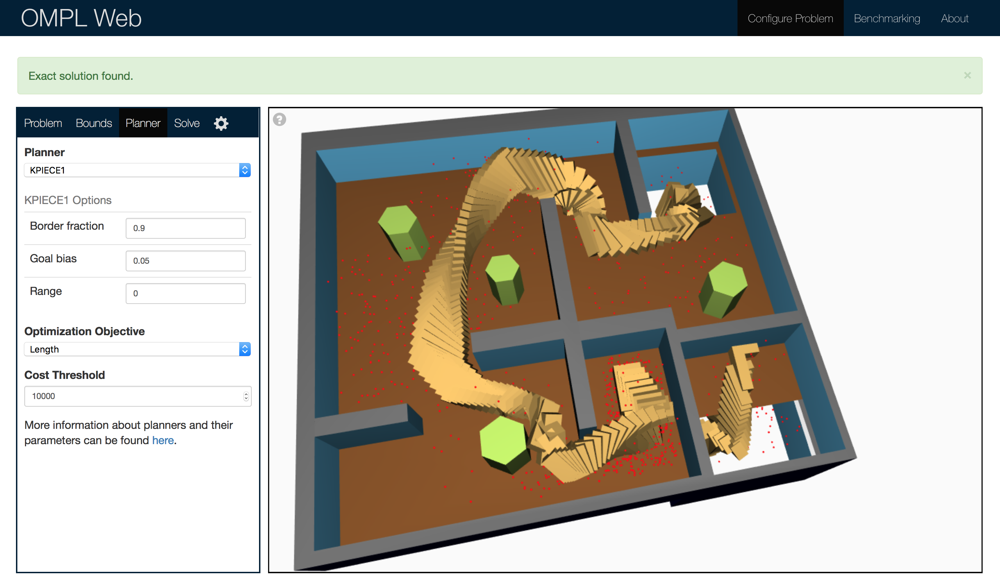
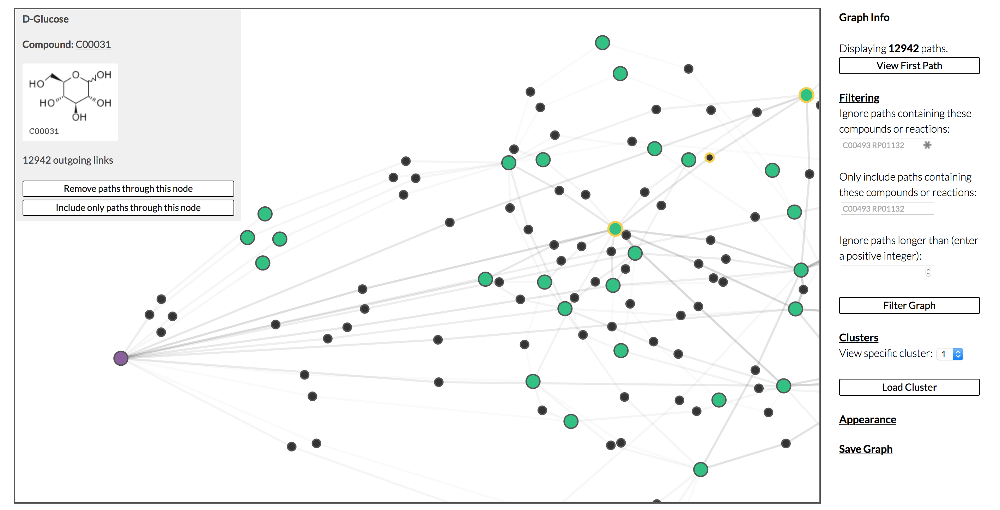
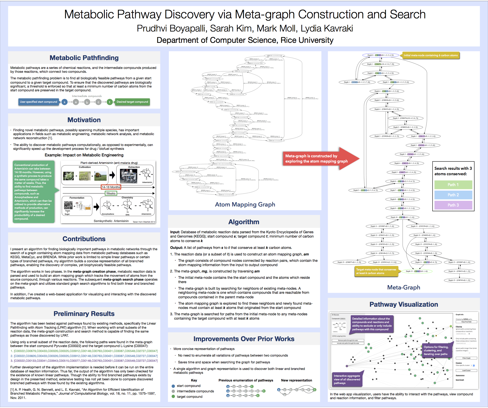

OMPL Web Application

The OMPL web app is a front end for motion planning and benchmarking using the
Open Motion Planning Library. Users can configure and solve motion planning
problems using 3D models of robots and environments as well as visualize
solution paths. It also has the ability to benchmark planning algorithms,
allowing users to compare performance across different types of problems and
pick the best planner for their needs.
Web App:
omplapp.kavrakilab.org
Source Code:
github.com/ompl/omplapp
Open Motion Planning Library:
ompl.kavrakilab.org
en.wikipedia.org/wiki/OMPL
Metabolic Pathway Search & Visualization

I am currently in the process of researching and developing an algorithm for
finding biologically meaningful pathways in metabolic networks. The goal is to find pathways in a graph of
metabolic reactions that conserve a given number of carbon atoms from start to
goal. Pathways which conserve a high percentage of atoms from the start to goal
compounds will be biologically relevant. So, by tracking atoms, we are more
likely to find metabolic pathways of biological importance. The movement of
atoms through the pathway's reactions is modeled as the movement of flow through
a directed graph. Applications for this work include metabolic engineering, as
well as more general flow movement problems.

Source Code:
github.com/prb2/metapaths_search_alg
In addition to the path finding algorithm, I am also developing a web front
end for visualizing metabolic pathways. Users have the ability to interact with
the visualization, view compound and reaction information, and filter pathways.
This demo is a work in progress. It will take a while to load and is
unstable. Demo:
prb2.web.rice.edu/metapaths/SearchResults.html
Source Code:
github.com/KavrakiLab/metapaths